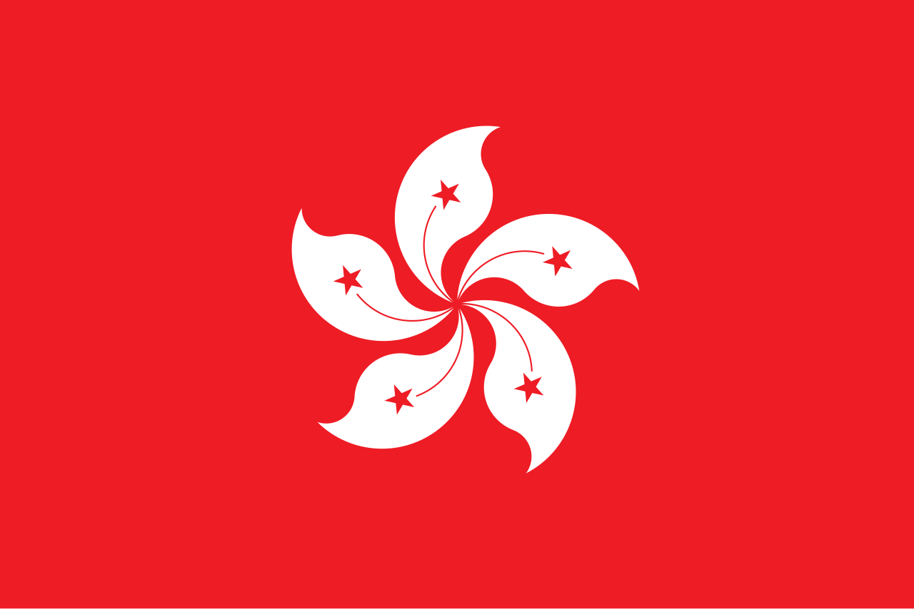

Italy is a country in south-central Europe, shaped like a boot, that occupies a peninsula
jutting into the Mediterranean Sea. It has varied landscapes, from the Alps in the north to
the Apennine Range running down its length. The country's political geography has led to
independent towns and cities with distinct cultures.
Italy is known for its contributions to visual arts, literature, music, philosophy, culinary
arts, and sciences. It was at the forefront of the Renaissance, with artists like Michelangelo
and Leonardo da Vinci. Italy is also a world leader in high fashion, centered in Milan.
Hong Kong is not a country, but a special administrative region (SAR) of China. It is located
on the south coast of China, east of the Pearl River estuary and bordered to the north by
Guangdong province.
Hong Kong has a free-trade policy and is one of the world’s great centers of trade. There are
no tariffs on imports, with the exception of some luxury items. Its economy has developed in
manufacturing, trade, and shipping, and it is a regional financial center.

Sydney is the capital of New South Wales, Australia, and it's the largest city in the country.
It has a big harbor and is an important port in the South Pacific.
Sydney is known for its outdoor activities like swimming, surfing, and sailing. Bondi Beach
and Palm Beach are famous beaches. The city also has many parks, including Royal National
Park, the world's second national park. Cultural attractions include the Sydney Opera House,
the Australian Museum, and the Art Gallery of New South Wales.
Sydney has a warm, sunny climate with average temperatures from 72°F (22°C) in January to 55°F
(13°C) in July. The average rainfall is 47 inches (1,200 mm) per year.

London is the capital of the United Kingdom and one of the world's oldest major cities. Its
history goes back two thousand years. Today, it’s the biggest city in Britain and a hub for
economics, transportation, and culture.
London’s economy has evolved from trade, administration, and leisure. It’s a global financial
center. The arts thrive in London, with many music, theater, and film venues. London is also
the center of the UK government, with important legislative power concentrated at Westminster.
More information
Do people in London really drink tea at 5 PM every day?
 |
 |
 |
 |
|---|---|---|---|
| Where to go in Spring | Where to go in Summer | Where to go in Autumn | Where to go in Winter |
| Fresh air, green parks, and the smell of new beginnings. | The ocean is calling. Dive into the best adventure of the year. | Pumpkin spice, warm sweaters, and breathtaking mountain views. | Experience the northern lights and the magic of snow. |
| Destination | Peak Season | Shoulder Season | Low Season | |||||||||
|---|---|---|---|---|---|---|---|---|---|---|---|---|
| Months | ||||||||||||
| Jan | Feb | Mar | Apr | May | Jun | Jul | Aug | Sep | Oct | Nov | Dec | |
 Italy |
||||||||||||
|
 Hong-Kong |
||||||||||||
 Australia |
||||||||||||
 UK/London |
||||||||||||